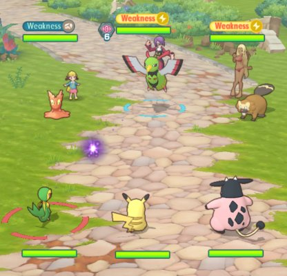
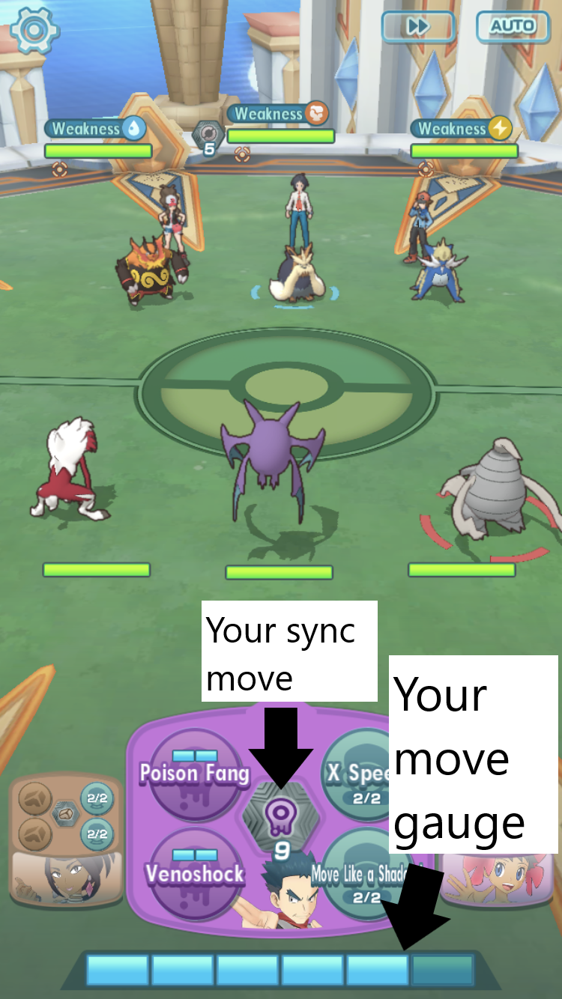

There are many ways when it comes to battling NPC (Non-player character) in single player or in Co-Op where you play with other players to defeat NPC players that you are battling.
In game, you will see at the bottom of the screen that your move gauge is slowly increasing. Those move gauges are used to attack your opponents. When your Pokemon attacks, it will use some of the move gauge to attack. Some of the pokemon has skills that benefit the Pokemon so it can do more damage, higher defense, etc, and they don't cost any move gauge, but you can only use a certain amount in game. To activate your Sync move, you need to do a certain amount of actions in order to activate it.
In Single player mode, you can play in Main Story, Events that are going on, go on Sync Pair Stories or train your Pokemon in the Training area. When you battle in game, you can control all 3 of your Sync pairs.
In Co-Op mode, you can play in Main Story, Events that are going on or unlock a new feature in Training area. When you battle in game, you can only control 1/3 characters that are fighting. The other 2 of your Pokemon sits out until you swap your Pokemon or if the Pokemon fainted. When you and the other players used a certain amount of move gauges, it forms an attack chains that can deal massive damage to your opponents.
Return to the top of the page.